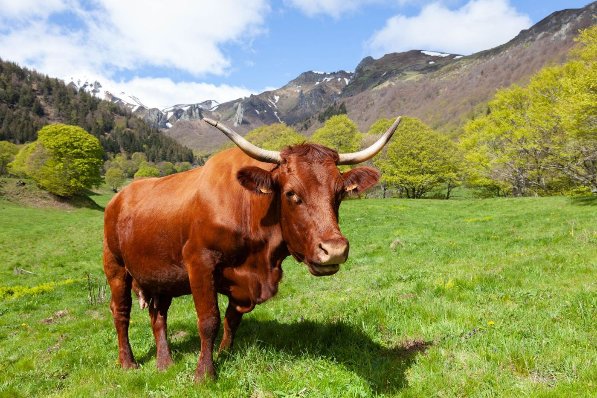

La cave du Buron
Tous nos fromages
Les cinq AOP d’Auvergne, leurs voisins du Massif central et quelques grands classiques. Cliquez sur un fromage pour le découvrir en photo, avec son histoire, nos conseils et son prix au kilo.
Prix au kilo indicatifs, coupe à la demande. La cave change avec les saisons : demandez au comptoir.

À la coupe
Un plateau, une raclette ?
Commandez en ligne et retirez votre commande en boutique, au 9 rue des Saulées.
Commander en click & collect